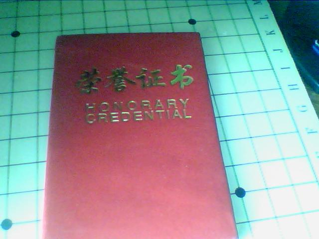
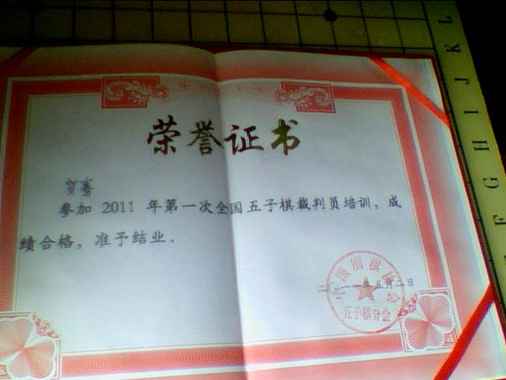
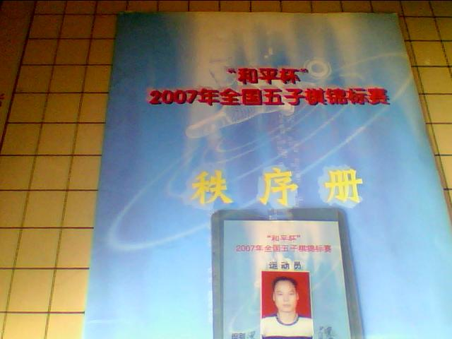
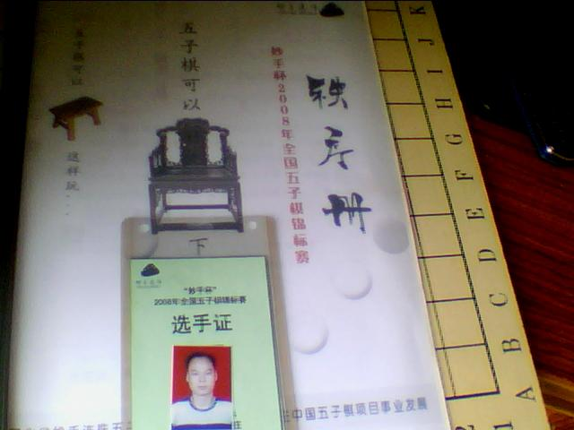
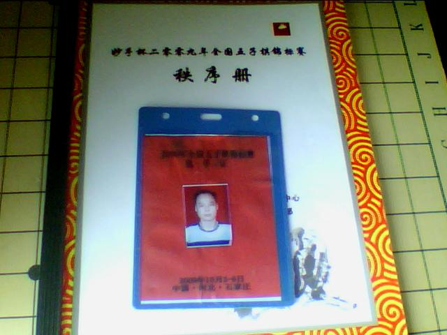
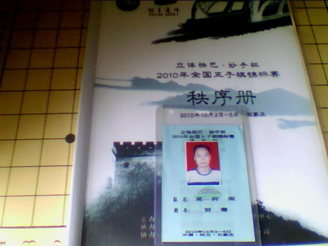
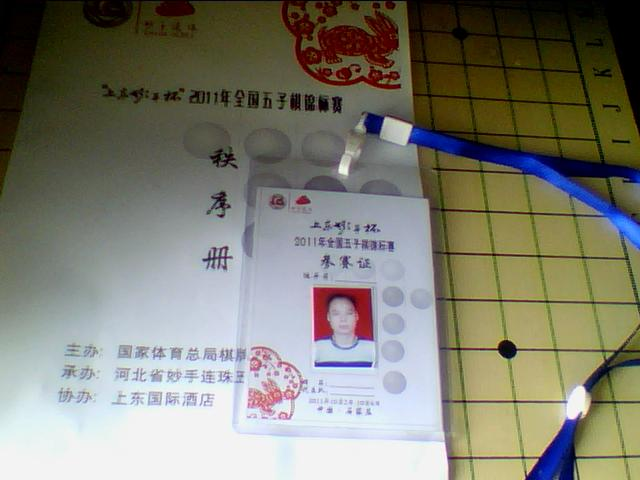
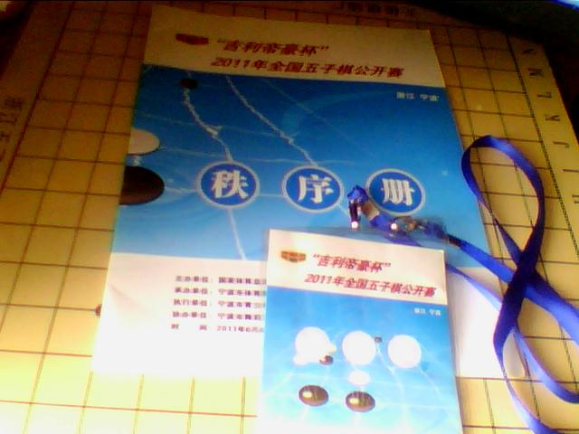
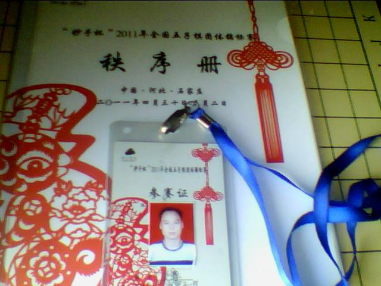
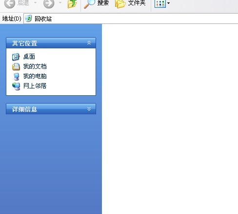

收获（二）
#1 收获（二）作者：菜包先生 发表时间：2011-10-9 13:07:20
历时五年七次参加全国性质赛事唯一的红本本，裁判员证书！连个体育风尚的安慰奖都都没混上，抛开扯蛋的裁判员评委组，看来提高自身的“体育风尚”也很关键［此帖子已被 菜包先生 在 2011-10-9 13:16:11 编辑过］
［ 失落刀 于 2011-10-9 17:06:22 时奖励此帖[金币加 100 威望加1］
［ 黄药师 于 2011-10-9 23:18:38 时花20金币送鲜花一朵］
［ 黑大帅 于 2011-10-13 14:48:27 时花20金币送鲜花一朵］
#2 Re:收获（二）作者：菜包先生 发表时间：2011-10-9 13:07:59
裁判证。。。［此帖子已被 菜包先生 在 2011-10-9 13:08:17 编辑过］
#3 Re:收获（二）作者：菜包先生 发表时间：2011-10-9 13:09:03
07年参赛证和次序册［此帖子已被 菜包先生 在 2011-10-9 13:09:21 编辑过］
#4 Re:收获（二）作者：菜包先生 发表时间：2011-10-9 13:09:42
08年参赛证和次序册［此帖子已被 菜包先生 在 2011-10-9 13:10:05 编辑过］
#5 Re:收获（二）作者：菜包先生 发表时间：2011-10-9 13:10:24
09年参赛证和次序册［此帖子已被 菜包先生 在 2011-10-9 13:12:40 编辑过］
#6 Re:收获（二）作者：菜包先生 发表时间：2011-10-9 13:10:43
10年参赛证和次序册［此帖子已被 菜包先生 在 2011-10-9 13:13:16 编辑过］
#7 Re:收获（二）作者：菜包先生 发表时间：2011-10-9 13:11:01
11年参赛证和次序册［此帖子已被 菜包先生 在 2011-10-9 13:13:43 编辑过］
#8 Re:收获（二）作者：菜包先生 发表时间：2011-10-9 13:11:23
11年公开赛参赛证和次序册［此帖子已被 菜包先生 在 2011-10-9 13:14:38 编辑过］
#9 Re:收获（二）作者：菜包先生 发表时间：2011-10-9 13:11:46
11年团体赛参赛证和次序册
再见了，部份可爱的棋友，去TMD的五子棋
［此帖子已被 菜包先生 在 2011-10-9 13:18:03 编辑过］
#10 Re:收获（二）作者：掌棋如烟 发表时间：2011-10-9 13:30:11
挽留。。。。。#11 Re:收获（二）作者：菜包先生 发表时间：2011-10-9 13:32:57
未来的目标：好好工作，努力挣钱，然后在湖南举办一次全国赛。
让北方的棋手在十一黄金周的时候站10几个小时来湖南参赛。
嗯，站着来了不住指定酒店不给参赛证。
还有，没住够五天不给退房。
餐票更不能退
［此帖子已被 菜包先生 在 2011-10-9 13:43:54 编辑过］
［此帖子已被 菜包先生 在 2011-10-9 13:48:31 编辑过］
［ 天真無邪 于 2011-10-9 14:00:34 时花20金币送鲜花一朵］
［ 黑大帅 于 2011-10-13 14:52:26 时花20金币送鲜花一朵］
#12 Re:收获（二）作者：天真無邪 发表时间：2011-10-9 14:00:22
坚持了那么久 现在放棄 有点可惜了
#13 Re:收获（二）作者：五子酷 发表时间：2011-10-9 14:06:50
哥下的不是棋，是收藏！
#14 Re:收获（二）作者：蓝天蓝 发表时间：2011-10-9 16:45:20
下的不是棋，是收藏！#15 Re:收获（二）作者：小丸.net 发表时间：2011-10-9 16:48:29
菜哥，解释一下为什么要对回收站进行截图发上来。
什么。。。。。你把2.3G的东西全删光了？
不过你的东西也太少了点，我光五子棋的照片就有20G.....
［此帖子已被 小丸.net 在 2011-10-9 16:49:47 编辑过］
#16 Re:收获（二）作者：菜包先生 发表时间：2011-10-9 18:55:55
我的2.3G全是压缩包，是棋谱。删了。#17 Re:收获（二）作者：算石 发表时间：2011-10-9 19:26:05
对五子棋那份心 希望你能坚持下去!奉献也是精神上的粮食#18 Re:收获（二）作者：算石 发表时间：2011-10-9 19:27:57
站着来了不住指定酒店不给参赛证。????#19 Re:Re:收获（二）作者：小丸.net 发表时间：2011-10-9 19:53:55
引用：根据竞赛规程，不在主办方指定的酒店下塌无法获得参赛资格。
原文由 算石 发表于 2011-10-9 19:27:57 :
站着来了不住指定酒店不给参赛证。????
#20 Re:收获（二）作者：tears 发表时间：2011-10-9 21:16:00
怎么着？你不跟我们玩啦？#21 Re:Re:收获（二）作者：菜包先生 发表时间：2011-10-9 22:28:15
引用：
原文由 tears 发表于 2011-10-9 21:16:00 :
怎么着？你不跟我们玩啦？
 哥认输了，哥玩不过你们
哥认输了，哥玩不过你们
#22 Re:收获（二）作者：南京小飞机 发表时间：2011-10-9 23:00:50
无比怀念大仙……虽然大仙已走，但是……
大仙的精神永远活在我们心中……
#23 Re:收获（二）作者：黄药师 发表时间：2011-10-9 23:20:34
让北方的棋手在十一黄金周的时候站10几个小时来湖南参赛。

#24 Re:收获（二）作者：杨文浩 发表时间：2011-10-10 14:17:53
我跟你的战绩才1:1，你居然就不下了，我不甘心啊#25 Re:收获（二）作者：小丸.net 发表时间：2011-10-10 14:22:30
杨老师你就别念叨了，你还赢过包子，我都没跟他下过
#26 Re:收获（二）作者：拈棋居 发表时间：2011-10-10 23:28:38
找到最爱，奔吧#27 Re:Re:收获（二）作者：被感动的人 发表时间：2011-10-12 12:07:19
引用：+1
原文由 小丸.net 发表于 2011-10-10 14:22:30 :杨老师你就别念叨了，你还赢过包子，我都没跟他下过
#28 Re:收获（二）作者：茗弈宽容 发表时间：2011-10-12 13:44:12
 帅呆了弟弟，你站在哪都绝对是一道风景！
帅呆了弟弟，你站在哪都绝对是一道风景！